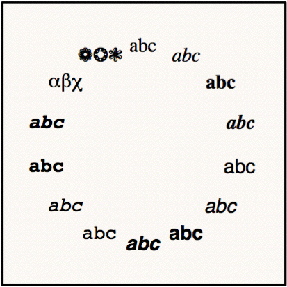
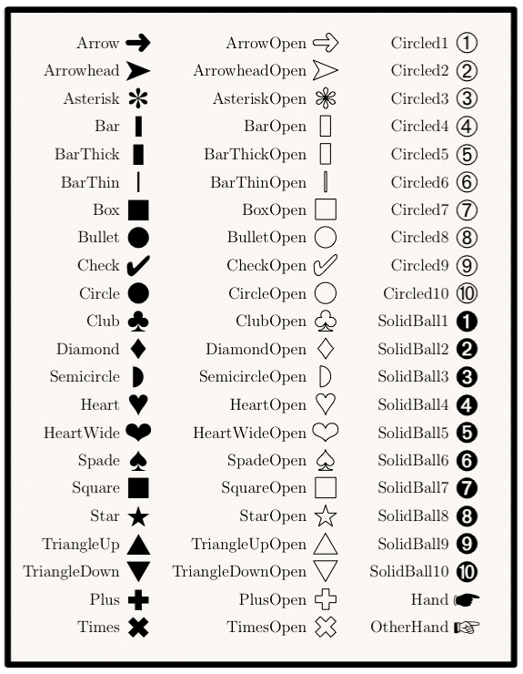
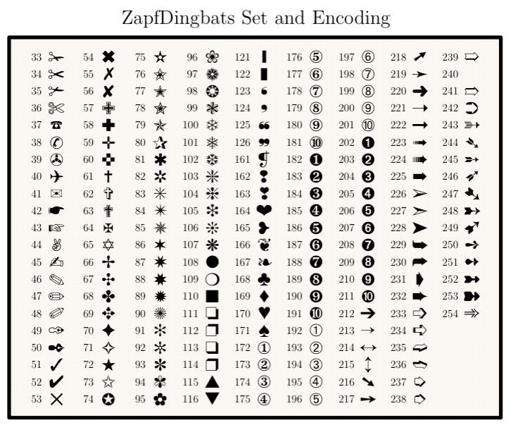

module Tioga::MarkerConstants
PDF Fonts¶ ↑
Text is normally sent to TeX, allowing you to use any font that can be accessed from your TeX documents.
However, in certain special cases you may need to use text in a “graphical” manner and have it processed directly in the PDF output. In that case, tioga needs to have metric information for the font (in the form of an “afm” file), and any output device needs to have access to the font definitions. Providing a general solution to this is still a bit messy, and for the expected use in tioga, I decided that it wasn't worth it. All PDF devices are guaranteed to have the 14 standard Adobe fonts, so they are easy to provide – and that's what I've done.
Here are the abc's of the PDF fonts, clockwise from the top: Times_Roman, Times_Italic, Times_Bold, Times_BoldItalic, Helvetica, Helvetica_Oblique, Helvetica_Bold, Helvetica_BoldOblique, Courier, Courier_Oblique, Courier_Bold, Courier_BoldOblique, Symbol, and ZapfDingbats.

Markers¶ ↑
Any character from any of the PDF fonts can be used as a marker. The predefined marker names are provided as a convenience, not as an exhaustive list. Markers are specified by either a font number and character code (for filled characters), or by a font number, character code, and line width (for stroked characters). In the following figure many of the markers appear in both a filled form, such as 'Arrow', and a stroked form, such as 'ArrowOpen'. The color of filled markers is determined by the current setting of fill_color, and, similarly, stroke_color determines the color of stroked markers.

Here is the full set of options from the ZapfDingbats font. If you would like to use the jet plane as a marker, just write [ ZapfDingbats, 40 ] where you would have used one of the predefined marker names.

Constants
- Arrow
- ArrowOpen
- Arrowhead
- ArrowheadOpen
- Asterisk
- AsteriskOpen
- Bar
- BarOpen
- BarThick
- BarThickOpen
- BarThin
- BarThinOpen
- Box
- BoxOpen
- Bullet
- BulletOpen
- Check
- CheckOpen
- Circle
- CircleOpen
- Circled1
- Circled10
- Circled2
- Circled3
- Circled4
- Circled5
- Circled6
- Circled7
- Circled8
- Circled9
- Club
- ClubOpen
- Courier
- Courier_Bold
- Courier_BoldOblique
- Courier_Oblique
- Cross
- Diamond
- DiamondOpen
- Hand
- Heart
- HeartOpen
- HeartWide
- HeartWideOpen
- Helvetica
- Helvetica_Bold
- Helvetica_BoldOblique
- Helvetica_Oblique
- OtherHand
- Plus
- PlusOpen
- Semicircle
- SemicircleOpen
- SolidBall1
- SolidBall10
- SolidBall2
- SolidBall3
- SolidBall4
- SolidBall5
- SolidBall6
- SolidBall7
- SolidBall8
- SolidBall9
- Spade
- SpadeOpen
- Square
- SquareOpen
- Star
- StarOpen
- Symbol
- Times
- TimesOpen
- Times_Bold
- Times_BoldItalic
- Times_Italic
- Times_Roman
- TriangleDown
- TriangleDownOpen
- TriangleUp
- TriangleUpOpen
- ZapfDingbats